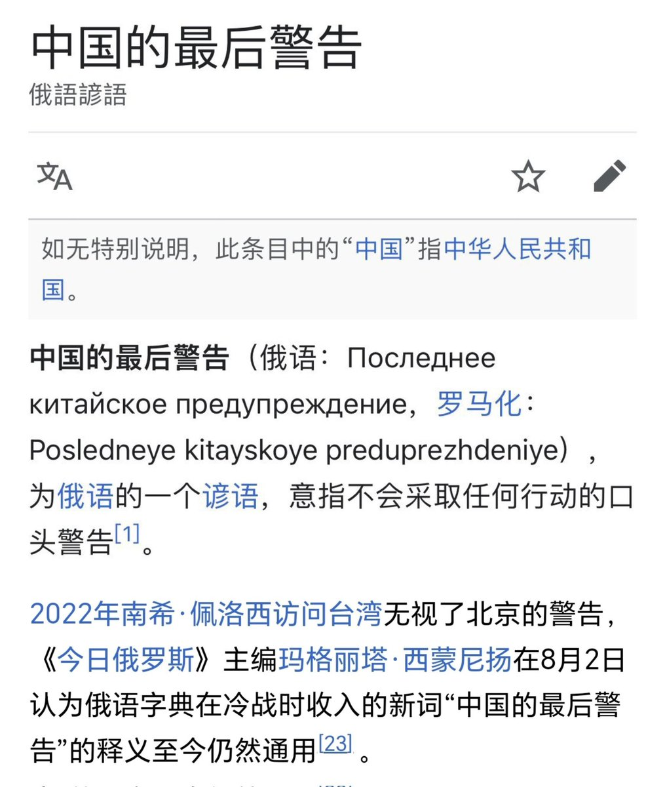

月影独下
@tadatsukiei
@Wangwenhaha0518 哈哈，好笨😆

量子·王文哈哈（新中国联邦）
@Wangwenhaha0518
🚨突发新闻：中共国警告以色列停止与台湾的军事合作。
有报道称，台湾正在以色列的军事援助下，开发类似于“铁穹”的多层防空系统“T-Dome”。对此，中共国向以色列发出严厉警告。
🔥评：习近平警告过的国家，包括美国、日本、以色列、立陶宛…..🤣🤣 https://t.co/zNvafkJEhH